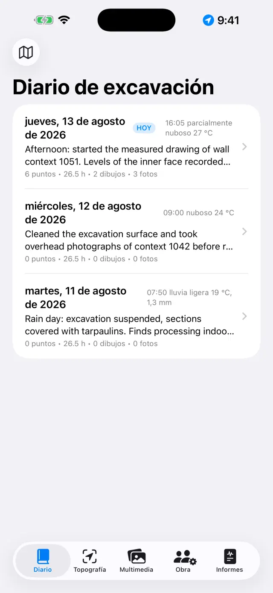
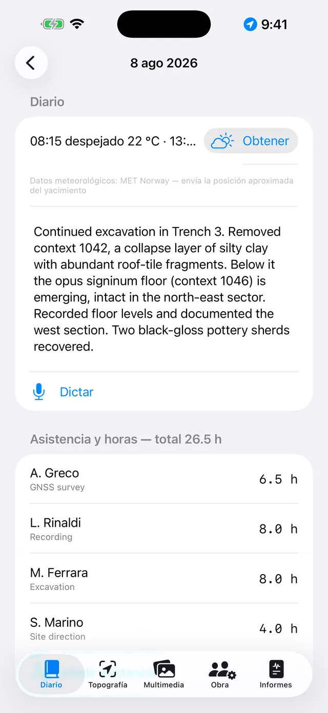
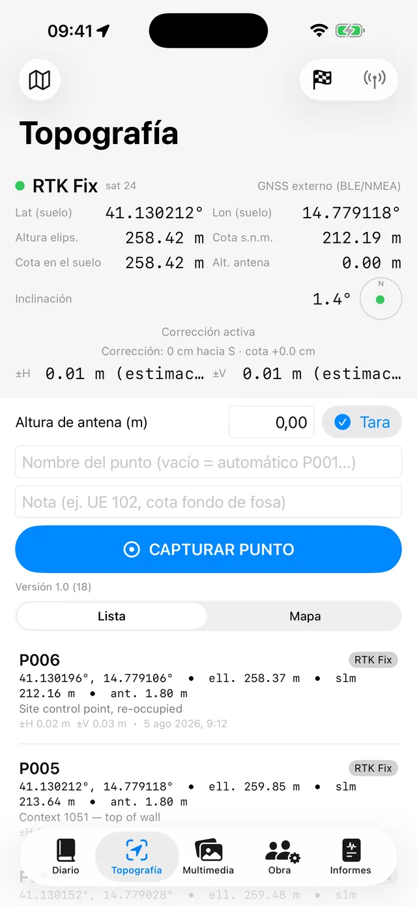
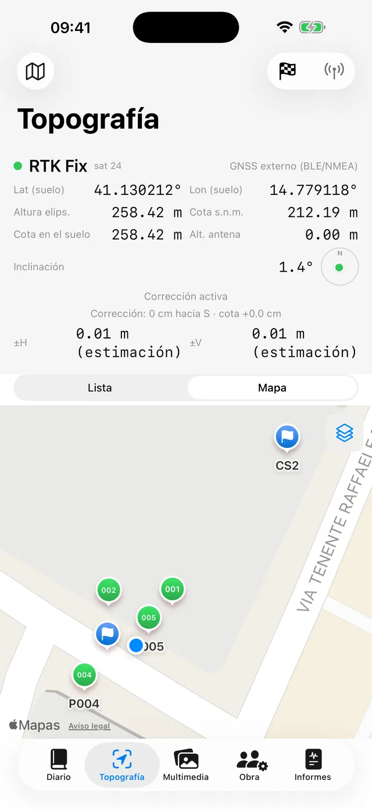
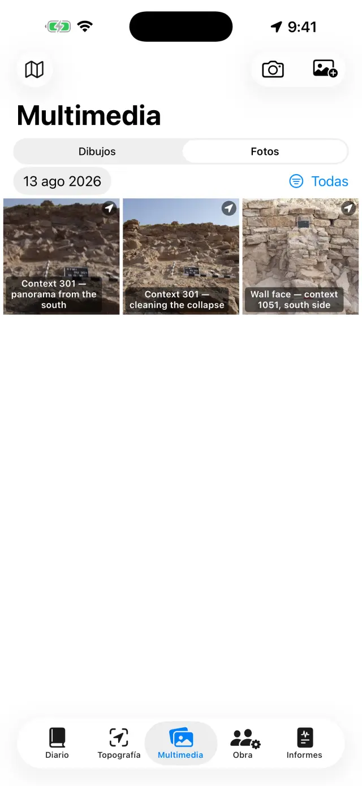
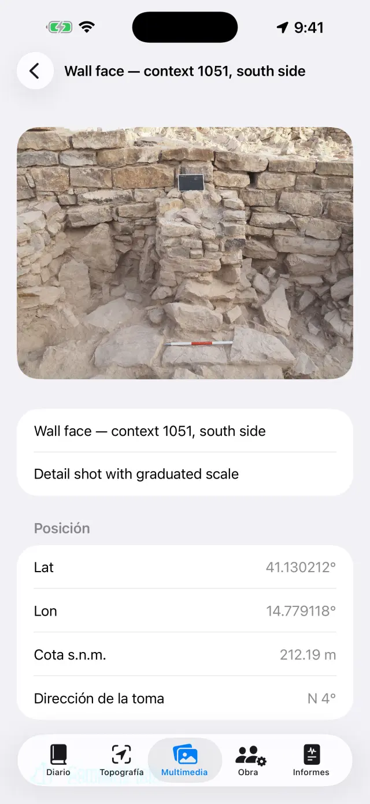
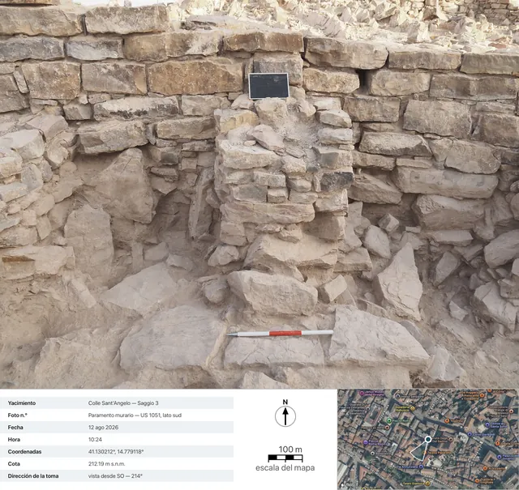
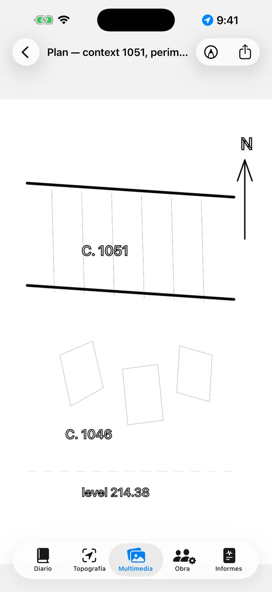
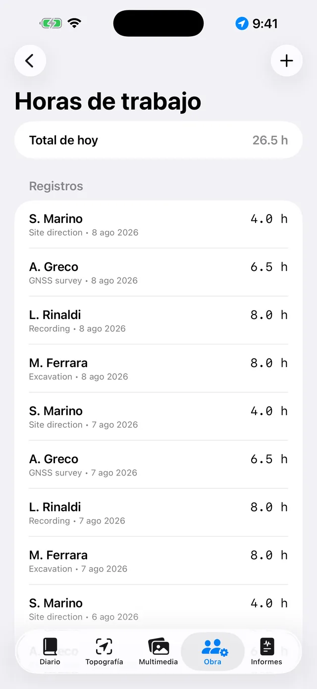
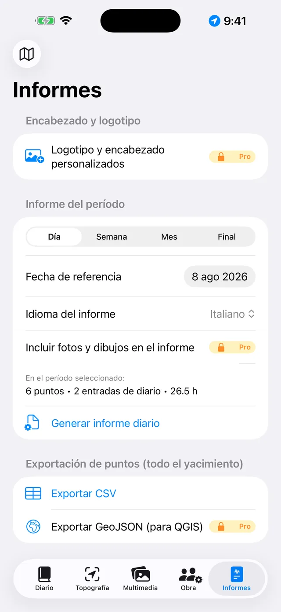

El diario de excavación digital para iPhone y iPad. 100 % sin conexión: tus datos se quedan en el dispositivo.
En dos palabras
Todo gira en torno a una idea: cada jornada de excavación es una
página que se rellena sola. Tú registras las cosas donde corresponde —
un punto GNSS en Topografía, una foto en Multimedia, las horas en la Obra — y
la página del día en el Diario lo recoge todo automáticamente. Al
final de la semana o de la excavación, los informes se generan solos a partir
de las páginas.
Una jornada típica
MañanaAbre la página del día, anota el tiempo y el diario (o dictalo con Dictar)
EquipoEn la Obra, registra quién está y sus horas
TopografíaCaptura puntos GNSS; comprueba una base antes si usas RTK
FotosDispara desde Multimedia: las coordenadas se añaden solas
DibujosCalca la sección o la planta sobre una foto (papel vegetal digital)
UEActualiza las fichas de las UE excavadas y sus relaciones: UE
MaterialesCon las cajas delante, registra lo que ha salido: Obra → Materiales
TardeDesde Informes, genera el diario: un PDF listo para enviar
Primeros pasos
Al abrir la app por primera vez encontrarás un yacimiento de ejemplo. Para
crear el tuyo, toca el nombre del yacimiento arriba (icono 🗺) →
Nuevo yacimiento… y ponle nombre (p. ej. «Colle Sant'Angelo —
Sondeo 3»).
El nombre del yacimiento activo está siempre visible arriba: todas las
pestañas muestran sus datos. Para cambiar de yacimiento, vuelve a tocar el
nombre: la lista está bajo el título «Tus yacimientos», y con
Renombrar yacimiento… corriges un nombre sin perder nada.
Concede los permisos cuando se pidan: ubicación (para los puntos),
cámara (para las fotos), micrófono (para el dictado),
Bluetooth (solo si usas un receptor externo).
Las seis pestañas
📓 Diario
Toca una jornada para abrir su página: diario, tiempo, equipo, puntos,
fotos y dibujos del día ya están allí.
Escribe el diario o toca Dictar y habla: la transcripción se
hace en el dispositivo y funciona sin red.
El meteo se escribe a mano (p. ej. «Despejado, 28 °C, viento flojo») o se
obtiene con Obtener, que pide las condiciones del momento al servicio
meteorológico noruego. Hace falta red y solo funciona en el día de hoy: el
tiempo de ayer ya no se puede recuperar. Un segundo toque por la tarde añade
otra medida. Lo que escribes a mano siempre gana.
Al obtenerlo, del dispositivo solo sale la posición de la zona redondeada a
unos 11 metros, y en los informes la línea aparece en el idioma del informe.

La lista de jornadas

La página de una jornada
🧱 UE — fichas estratigráficas
Una ficha por cada unidad estratigráfica, con las relaciones entre las UE
registradas como enlaces: de aquí salen las fichas de UE de la documentación y
la matriz de Harris.
En la pestaña UE toca +: la app propone el número
siguiente (lo puedes cambiar) y pide tipo y definición. El número es único en
el yacimiento; más tarde lo cambias con Cambiar, y las cajas con esa
procedencia lo siguen.
La ficha recoge identificación (tipo, definición, área o sector,
cuadrícula), dimensiones y cotas (longitud, anchura, potencia, cota mínima y
máxima), descripción (color, consistencia, componentes), interpretación,
datación, fechas de apertura y cierre y responsable. Se guarda sola mientras
escribes.
Junto a definición, color, consistencia, componentes, interpretación y
datación está el botón del tesauro (el librito): elige del
léxico estándar o de tus propios términos, y la ficha queda uniforme entre
quienes excavan. En los componentes se puede elegir más de uno. Si la palabra
que buscas no está, la hoja propone añadirla. Tus términos valen para todos los
yacimientos y se gestionan desde Tesauro, en el menú ⋯ de la pestaña
UE.
Añadir relación: elige la relación (cubre, corta, rellena, se
apoya en, se une a, igual a, y sus inversas) y escribe el número de la otra UE.
La relación se registra una sola vez y aparece invertida en la otra ficha: si la
101 cubre la 102, en la 102 lees «cubierta por 101». Si la otra UE aún no tiene
ficha, se crea vacía. Una relación que contradice la secuencia ya registrada se
rechaza, con la explicación.
La sección de materiales muestra las cajas cuya procedencia nombra la UE
(«UE 102», «UEM 12»): no hay nada que enlazar a mano.
Añadir material abre la ficha del material con la procedencia ya
escrita.
Desde el menú ⋯, Matriz de Harris dibuja la secuencia a partir de
las relaciones: la UE más reciente arriba, las UE iguales o unidas en un solo
recuadro, los cortes discontinuos, las murarias sobre fondo gris. Se amplía con
dos dedos y se comparte como imagen.
📍 Topografía
El panel superior muestra la posición en vivo: coordenadas, cotas,
precisión y tipo de fix (GPS / RTK Float / RTK Fix).
Si usas jalón, ajusta la Altura de antena (m): la cota del punto
se reduce al suelo automáticamente.
Toca Capturar punto. Los nombres son correlativos (P001,
P002…), pero puedes escribir el tuyo (p. ej. «UE 102 — fondo de fosa») y
añadir una nota.
Cambia entre Lista y Mapa para ver los puntos sobre
el terreno; desde el mapa puedes activar el catastro u otro servicio WMS.
Las bases de replanteo (🏁) tienen su propia sección: impórtalas de CSV o
créalas, y abre la Comprobación en vivo para vigilar los residuos
ΔN/ΔE/ΔZ con la punta sobre el clavo, antes de empezar a medir.
Bajo Libretas de nivelación está la libreta de campo del nivel
óptico: estaciones, lecturas atrás y adelante, cotas calculadas desde una
base de partida, con el control del error de cierre. Los puntos nivelados
entran en el yacimiento con su cota, igual que los GNSS.
En los dispositivos con escáner LiDAR (iPhone Pro del 12 en
adelante, iPad Pro) aparece Medición 3D:
encuadra despacio hasta que la superficie se reconstruya, luego toca los dos
puntos que quieres medir y lee la distancia, la distancia horizontal y el
desnivel. Con Anclar a una base eliges una base de cota conocida y
tocas su punto sobre el terreno: de ahí en adelante cada medida lleva también la
cota s. n. m. de los dos extremos. Fijar deja la medida en la escena,
Descartar medición la tira, Llevar al diario la convierte
en un texto que corriges antes de confirmar. Es una medida óptica, y la app lo
declara escribiendo «LiDAR ±cm»: sirve para un desnivel o una longitud tomada
deprisa sobre el terreno, y no sustituye al GNSS ni al nivel. En los
dispositivos sin escáner el botón no está en absoluto.
Bajo el panel están las Grabaciones NMEA: el flujo bruto del
receptor externo acaba en un archivo por sí solo
— la grabación arranca cuando enciendes la antena y se cierra cuando la apagas,
sin que tengas que acordarte. Sirve para releer una jornada dudosa o para
entregar el bruto a quien hace el posproceso. Los archivos se comparten y se
borran, salvo el de la grabación en curso; la lista se abre también con el
receptor apagado, así los archivos de ayer siguen al alcance.

El panel GNSS de Topografía

Puntos y bases en el mapa
Cada punto guarda las dos cotas: elipsoidal y
ortométrica (s. n. m.). Con el GPS interno del teléfono la cota ortométrica
puede no estar disponible: hace falta un receptor externo (ver más abajo).
📷 Multimedia
Dispara con el botón de cámara o importa del carrete.
Las fotos se numeran solas (F001, F002…) y se georreferencian con la última
posición GNSS disponible.
Al disparar, la app también registra la dirección de la
toma con la brújula: en el detalle de la foto y en los informes lees
«vista desde SO — 214°», y para las tomas en vertical (planta, fondo de una
UE) la indicación nadir con la dirección del borde superior. Si la brújula
está perturbada, la app lo indica.
Toca una foto para ponerle título y notas (p. ej. «UE 102 desde el
norte»).
Compartir ficha genera la
ficha fotográfica de documentación: la foto con los datos de
la toma debajo (yacimiento, número, fecha y hora, coordenadas, cota,
dirección), una vista satélite con el marcador y el cono de toma, la barra de
escala del mapa y la flecha del norte. El mapa necesita red: sin ella, la
ficha sale igualmente, con el panel de datos ampliado.
Escala virtual pone sobre la foto las referencias métricas que en
el campo no tenías. Primero Calibrar foto: tocas los dos extremos de
una distancia que conoces — una marca de la regla, el lado de un ladrillo — y la
declaras en centímetros. Luego pones lo que haga falta:
Escala gráfica 5 cm, Escala gráfica 10 cm o
Escala gráfica 20 cm, Jalón 50 cm, Jalón 1 m o
Jalón 2 m, Cuadrado 10×10 cm,
Cruz de referencia y Flecha del norte. Cada elemento tiene
su aspecto (Barra plana, Jalón real,
Regla con marcas), su tamaño, su grosor y su giro; para mover uno
mantenlo pulsado y arrástralo — así el pellizco del zoom no lo
desplaza por error.
Añadir medida mide una distancia cualquiera sobre la foto con dos
toques. El número no se guarda nunca: si recalibras, todas las etiquetas se
reescriben solas. En las fotos tomadas en vertical con la app, la flecha del
norte nace ya orientada según el acimut registrado, y el informe lo declara; si
la giras tú, la indicación pasa a «declarada». Compartir con escala
saca una copia de la foto con encima lo que has puesto —
Compartir foto sigue siendo el original desnudo, con su EXIF.
Procesar en serie (menú de arriba en
Multimedia) coge un grupo de fotos de la fototeca y las pasa todas
por contar y medir, una tras otra: cada foto se convierte en una foto del
yacimiento con la fecha de la toma, y cada una tendrá su ficha de
material nueva por confirmar. La pantalla se queda encendida durante
toda la serie. Si sales o la interrumpes, las fotos ya listas quedan en borrador
y Reanudar la serie arranca desde donde estaba. Al final la revisión
te pasa las fichas una por una: corriges procedencia, clase y cantidad, y
confirmas.

La galería de fotos

El detalle de una foto: coordenadas, cota y dirección de la toma

La ficha exportada: los datos de la toma, la vista satélite con el cono de toma, la barra de escala del mapa y la flecha del norte
🧮 Contar y medir (en Multimedia)
La bandeja de fragmentos fotografiada desde arriba, y la app que los cuenta y
los mide sola. La función vive en la foto de un material: la
abres desde su ficha y tocas Contar y medir.
Primero la escala. La app busca sola la escala gráfica en
la foto: si la encuentra te dice cuántas casillas ha leído, tú declaras cuánto
mide una casilla (1, 2, 5 o 10 cm) y tocas Usar la propuesta. Si no
la encuentra, tocas a mano los dos extremos de una distancia conocida. También
puedes elegir No calibrar: entonces solo se cuenta, y la app escribe
que las medidas no están — no se las inventa.
El modelo recorta todas las formas de la foto: puede tardar algunas decenas
de segundos. Lo que aparece es una propuesta, no un resultado:
un toque excluye una forma, otro la recupera. Unir funde en una sola
las formas que son la misma pieza partida en dos; Limitar a un área
te deja dibujar con el dedo el cerco de la bandeja, y la búsqueda se queda ahí
dentro; Pasada fina repasa solo donde no había encontrado nada. Los
sospechosos — las formas que parecen fondo, la lona, la
sombra — se agrupan y se excluyen de una vez.
Con Material de la forma tocas una pieza y dices qué es;
Material para todas se lo da a todas juntas, o solo a las que se han
quedado sin él. Proponer el material le pide al modelo del
dispositivo que lo adivine: es una propuesta por verificar, y tu elección gana
siempre.
Siguiente abre la hoja de confirmación con el texto ya escrito:
el recuento, las medidas (lado mayor × lado menor, en ese orden) y las
declaraciones honestas — «de los cuales N no tienen una medida fiable» cuando
una forma no se deja medir. Si en la foto hay una etiqueta, la
app intenta leerla y te lo dice siempre: o «Etiqueta leída: …», o «No hay texto
legible en la foto».
Los interruptores aparecen solo donde hay un hueco que rellenar:
Usar el recuento como cantidad, Usar como sigla,
Usar como procedencia. Lo que ya has escrito tú no se sobrescribe
nunca, y las notas se alargan: una segunda vuelta se pone a
continuación de la primera, no en su lugar. El texto es modificable: en las
notas entra lo que lees ahí.
Después, en el detalle de la foto, Números en las formas muestra
u oculta los numeritos — y tal como los ves ahí salen también en las
comparticiones y en los informes. Toca una forma para saber quién es:
«7: 4,2×2,8 cm». Si la foto no está calibrada, la etiqueta lo dice en vez de
dar un número.
La medida vale en el plano de los dos puntos que
has calibrado: la foto hay que tomarla en vertical, con la bandeja paralela al
sensor. La referencia declarada es de ±2 mm en las piezas bien encuadradas; un
fragmento de pie o en el borde de la foto queda fuera de ese pacto.
✏️ Dibujos (en Multimedia)
Crea una lámina nueva y elige una foto del yacimiento como fondo: es tu
papel vegetal digital. Un dibujo puede continuar en varias jornadas. También
puedes no ponerla, la foto: sobre el papel vegetal en blanco se dibuja
igual.
Calca estratos, cortes y piedras con el dedo o el Apple Pencil.
Pellizca para hacer zoom (hasta 6×, doble toque con dos dedos
para volver a 1×). Si la foto te tapa el trazo, elige Opacidad del fondo… en el menú de la cámara y llévala donde haga falta, del 5% al
100%: desvanece la foto, no el dibujo. La elección se queda en la lámina y vale
también en PDF, DOCX, PNG y en Exportar con leyenda.
Todo lo demás está bajo Herramientas (la llave inglesa de la
barra), que es el índice de los siete modos: Cuadro de texto,
Calco, Escala de la foto,
Punto con cota, Trama, Estilo de línea y
Escala virtual. Se
mantiene uno solo a la vez: la marca dice cuál, y mientras
está encendido el dedo no dibuja sino que gobierna esa herramienta — para
volver a dibujar, toca de nuevo la entrada marcada. Las tres entradas que
trabajan sobre la imagen (calco, escala, punto con cota) solo aparecen si hay
una foto de fondo.
Con Cuadro de texto pones las etiquetas (p. ej. «UE 1002»): se
mueven, se redimensionan con el pellizco y tienen cuatro tipos de letra entre
los que elegir.
El Calco reconoce el contorno del
objeto que tocas (una piedra, el límite de un estrato) y lo convierte en trazo:
el color, el grosor y el estilo de la línea se cambian sin salir del modo, y
los contornos salen lisos en vez de escalonados. Todo ocurre en el dispositivo,
sin red.
Dentro del calco, Calcar todo
recorre él solo toda la foto. En la hoja de arranque decides el aspecto —
Solo contornos, o una trama y quizá un Velo de color — y
pulsas Iniciar: la barra dice por dónde va, y tarda algunas decenas
de segundos. Lo que aparece es una vista previa, no el dibujo:
un toque dentro de una forma la excluye, otro la recupera (entre formas
superpuestas gana la más pequeña bajo el dedo), Pasada fina repasa
solo donde no había encontrado nada, y Aplicar pone en el dibujo lo
que ha quedado. Mientras no apliques, la lámina no se toca.
Con la herramienta Escala de la foto (regla) tocas los dos
extremos de una medida conocida — un tramo del jalón — y escribes la distancia
real: la foto adquiere la escala, y desde ahí las exportaciones hablan en
metros.
Con Punto con cota pones sobre la foto la cruceta de un punto
GNSS del yacimiento (o un punto escrito a mano): nombre, cota y coordenadas
aparecen en una etiqueta arrastrable con línea de referencia. Pellizca sobre la
etiqueta seleccionada para achicarla o agrandarla, cuando los valores tapan el
dibujo.
La Trama rellena las formas: tocas dentro de
una forma cerrada y esa se rellena. Están las diez tramas de convención —
Mampostería / piedra, Ladrillo, Mortero / revoque, Arcilla, Limo, Arena,
Grava, Carbón / ceniza, Roca natural,
Madera — y el Velo de color (un color con su opacidad),
solos o juntos. Si una forma está dentro de otra gana la más pequeña bajo el
dedo; Quitar relleno la limpia. No hace falta la foto: el relleno
trabaja sobre las formas dibujadas, así que funciona también sobre el papel
vegetal en blanco.
El Estilo de línea viste una línea ya
dibujada: la tocas y eliges entre Continua,
Discontinua, Punteada y Raya y punto,
ajustando el grosor. Dibujar con este estilo hace que los trazos
siguientes nazcan ya vestidos; Quitar estilo devuelve la línea
llena. No es un efecto de pantalla: las rayas son segmentos de verdad, y lo
siguen siendo en PDF, DOCX, PNG, SVG y DXF.
La Escala virtual lleva a la lámina las mismas referencias
métricas de las fotos: escala gráfica, jalón, cuadrado, cruz, flecha del norte y
medidas a dos toques. Los tipos métricos exigen que la lámina tenga escala, es
decir la Escala de la foto: sin una distancia conocida la app te lo
explica en vez de dibujar. En SVG y DXF estos
elementos salen como vectores, en su propia capa, y la medida
leída con la regla del SIG coincide con la etiqueta.
Exportar con leyenda: la imagen
sale con una franja blanca debajo — barra de escala (si hay escala), flecha
del norte para las fotos tomadas en vertical, «vista desde» para las
frontales.
Exportar vectorial: SVG para el
dibujo, o DXF para el SIG. Con al menos dos puntos con cota
y coordenadas sobre una foto tomada en vertical, el DXF sale
georreferenciado en UTM y en QGIS se coloca solo en el
mundo; con solo la escala sale en metros locales; sin ninguna de las dos
cosas, la app lo indica y no genera un archivo sin unidades. El SVG es la
excepción en cuanto a la opacidad: incorpora la foto original tal cual, así que
el fondo atenuado allí sale a plena fuerza.
Al terminar, oculta la foto: queda el dibujo limpio, listo para el
informe.

El papel vegetal digital
👷 Obra
Registra la asistencia del día: nombre, tarea y horas de cada persona.
Lleva el inventario del equipamiento y a quién está asignado.
Bajo Materiales está el registro de lo que sale de la excavación,
con el número de líneas ya registradas escrito bajo el nombre.

Equipo y horas
📦 Materiales (en la Obra)
El momento de verdad no es la cámara: es sentarse al final de la jornada con
las cajas delante y despacharlas una tras otra, cansado y con las manos sucias.
Todo aquí está hecho para ese momento.
Obra → Materiales → +. La ficha se abre ya
con la fecha de hoy y con la última procedencia usada: de la
segunda línea en adelante, registrar es casi solo tocar. El campo propone las
procedencias ya usadas en ese yacimiento.
Los campos están en el orden en que de verdad se rellenan:
Procedencia (p. ej. «UE 102»), Clase, Cantidad
con su Unidad (fragmentos, piezas, bolsas, cajas, gramos),
la sigla de la caja o de la bolsa, Estado
(Por lavar, Lavado, Siglado,
Entregado), notas y fecha.
Las clases propuestas son once — Cerámica, Ladrillo,
Huesos de animales, Huesos humanos, Metal,
Vidrio, Industria lítica, Mortero y enlucido,
Madera, Muestras, Otro — pero puedes escribir
una tuya («Enlucido pintado»): se quedará esa palabra en todos los idiomas,
porque la app solo traduce las voces que propone ella.
La cantidad se puede dejar vacía: una línea puede decir «había esta cosa»
sin contarla, y en las exportaciones esa celda se queda vacía, nunca a cero.
Las fotos de la ficha se hacen con Tomar foto, se cogen con
Desde la fototeca o con Del yacimiento, que pesca entre
las fotos ya en la galería que aún no tienen ficha. Son las mismas fotos de
Multimedia: borrar un material no borra sus fotos,
que solo pierden el vínculo.
En la página de la jornada, la sección Materiales aparece solo si
ese día has registrado alguno. Llevar al diario propone la línea
resumen, agrupada por procedencia y con las notas enteras: la corriges y la
añades al final del diario. Pulsado dos veces escribe dos veces — el diario
nunca se reescribe solo.
📄 Informes
Elige el tipo: diario,
semanal, mensual o final
con apéndices completos.
Elige el idioma del informe entre diecisiete, independiente
del idioma de la app: el informe puede salir en alemán aunque uses la app en
español.
Genera el PDF, o exporta DOCX con logotipo y fotos, CSV de los puntos, GeoJSON para QGIS.
Al final está Exportación de materiales (todo el yacimiento): Exportar CSV de materiales para la hoja de cálculo, y
Exportar HTML de materiales para una tabla con las miniaturas que se
abre en cualquier navegador sin red. Encabezados, clases, unidades y estados
salen en el idioma elegido para el informe; lo que has escrito tú se queda como
lo escribiste. En el informe final los materiales tienen su propio apéndice, por
procedencia.
Las UE entran en los informes: las abiertas y cerradas en el periodo en el
diario, el semanal y el mensual; en el informe final está el apéndice con todas
las fichas y la matriz de Harris.
Con las fotos en los informes activadas, puedes elegir Fichas fotográficas en lugar de las fotos: cada
foto entra en el PDF y el DOCX como ficha de documentación completa con
datos y mapa, en el idioma del informe.

Generación de informes
Receptor GNSS externo y NTRIP
Con un receptor externo (antena centimétrica) la app alcanza precisión RTK.
El GPS interno queda siempre disponible como respaldo.
Enciende el receptor y activa el Bluetooth del teléfono.
En Topografía elige la fuente de posición: GNSS externo
(BLE/NMEA) y selecciona tu receptor en la
lista. También se admiten receptores MFi y receptores que emiten NMEA
por red.
Para las correcciones RTK configura el NTRIP: dirección
del caster, puerto, mountpoint, usuario y contraseña (se guardan en el llavero
del dispositivo). La app envía tu posición al caster y recibe las
correcciones.
Espera al RTK Fix: precisión centimétrica. Comprueba una
base antes de empezar.
Donde el teléfono no tiene cobertura existe también el camino
sin internet: una base plantada sobre un punto conocido y un
rover que se intercambian las correcciones por radio LoRa, sin
caster y sin SIM (kit RTK DFRobot con puente ESP32). Para la app no cambia
nada — recibe del receptor un NMEA ya corregido — y el montaje del puente está
documentado aparte, en su propio README: esta sigue siendo una guía de la app,
no un manual de firmware.
Copia de seguridad e intercambio
En el menú del yacimiento toca Exportar yacimiento (.zip):
dentro va todo — diario, puntos, fotos, dibujos, horas, bases, materiales y fichas de UE.
Guarda el ZIP donde quieras (Archivos, Drive, correo…). Es tu copia de
seguridad: la app no tiene nube, por diseño.
Importar yacimiento (.zip)… recrea el yacimiento en otro
dispositivo, incluso entre iPhone y Android. La importación nunca sobrescribe
ni fusiona: crea siempre un yacimiento nuevo junto a los tuyos, con
«(importado)» en el nombre si ya tienes uno igual.
⚠️ Eliminar yacimiento… borra el yacimiento con todo
su contenido y es irreversible: si dudas, exporta antes un
ZIP.
Gratuita
Giornale di Scavo es gratuita y completa: todas las
funciones descritas en esta guía están incluidas, sin suscripciones, sin compras
dentro de la app y sin marca de agua, con yacimientos ilimitados.
Solución de problemas
El receptor Bluetooth no aparece o no se conecta
Comprueba, por orden:
el receptor está encendido y no está ya conectado a otra app u otro
teléfono;
el Bluetooth del sistema está activo y la app tiene el permiso
(Ajustes → Giornale di Scavo);
la fuente elegida en Topografía es GNSS externo (BLE/NMEA);
apaga y enciende el receptor y busca de nuevo.
Nunca llego al RTK Fix
Hace falta una conexión NTRIP activa: revisa caster, mountpoint y
credenciales.
Revisa la cobertura de datos del teléfono: las correcciones llegan por
internet.
Importa el cielo abierto: árboles densos y muros cercanos degradan la
señal. Con malas condiciones puedes quedarte en RTK Float (decimétrico).
Elige un mountpoint cercano (< 30–40 km) o una red VRS.
NTRIP no se conecta
Verifica dirección y puerto (a menudo 2101) y que el mountpoint exista: la
mayoría de los casters publican la lista (sourcetable).
Usuario o contraseña incorrectos dan error 401/403: revisa las
credenciales.
Algunas redes exigen tu posición (GGA): la app la envía sola, pero el
receptor necesita antes un primer fix.
La cota s. n. m. está vacía o a cero
El GPS del teléfono solo da la altura elipsoidal. La cota ortométrica
(s. n. m.) viene de la sentencia GGA de un receptor externo. Sin receptor, los
puntos guardan igualmente la elipsoidal.
El dictado no funciona
Revisa los permisos de micrófono y reconocimiento de voz en Ajustes.
La transcripción es en el dispositivo: la primera vez el sistema puede
descargar el modelo del idioma (red una sola vez; después funciona sin
conexión).
Habla con frases cortas; el texto se añade al final del diario.
El mapa catastral (WMS) no se ve
La app funciona sin conexión, pero las capas WMS son servicios web: hace
falta conexión y un servicio operativo. El catastro español se configura con el
endpoint WMS nacional (debe admitir EPSG:3857), por ejemplo
ovc.catastro.meh.es. Sin cobertura, el mapa base y tus puntos
siguen visibles.
Las fotos no tienen coordenadas
La foto toma la posición del último fix GNSS: abre antes Topografía y espera
posición; después dispara. Si el permiso de ubicación está denegado, las fotos
se guardan sin coordenadas.
En el informe faltan fotos o el logotipo
Comprueba que esté activado Incluir fotos y dibujos en el informe
y que el logotipo esté elegido en Encabezado y logotipo: valen tanto
para el PDF como para el DOCX.
He borrado un yacimiento por error
El borrado es definitivo: los datos no se pueden recuperar (no hay nube).
Si exportaste antes un ZIP, impórtalo para restaurar el yacimiento a esa
fecha. Consejo: exporta un ZIP al final de cada jornada.
«Obtener» está apagado, o dice «Meteo no disponible»
si el botón está apagado estás en la página de un día pasado: el meteo solo
se obtiene en el día de hoy;
si aparece «Meteo no disponible» falta la red, o el yacimiento aún no tiene
un punto GNSS del que tomar la posición — toma un punto y vuelve a intentarlo.
La ficha fotográfica sale sin mapa
La vista satélite viene de Apple y necesita red: la app espera hasta 15
segundos y luego genera la ficha sin mapa (los datos no esperan a la red).
En redes lentas de obra puede hacer falta toda la espera: vuelve a
intentarlo con Wi-Fi. Sin coordenadas en la foto, el mapa no existe por
definición.
«Calcar todo» no encuentra nada, o encuentra demasiado
el recorrido trabaja sobre la foto de fondo: sin foto el comando no está, y
mientras se lee «Preparando la foto…» el modelo aún no está listo — espera;
si las formas son pocas, pulsa Pasada fina: repasa con una
retícula más tupida solo donde la primera pasada no había visto nada, y añade
lo que encuentra sin volver a meter lo que habías excluido;
si son demasiadas, no lo apliques todo: en la vista previa toca las formas
sobrantes para excluirlas una a una, y luego Aplicar. Lo que
excluyes no acaba en el dibujo;
las fotos planas — poco contraste, luz de mediodía, terreno todo del mismo
color — dan pocos contornos por fuerza: ahí conviene el calco de toque único,
que sabe adónde estás mirando;
si queda lleno de formas minúsculas, prueba otra vez con Solo contornos: se leen mejor, y la trama siempre se puede tender después, a
mano.
El trazo no se deja vestir
el toque busca la línea más cercana dentro de un radio de una yema: si el
trazo es fino o hay muchos juntos, haz zoom y toca con más
precisión, justo sobre la tinta;
solo se visten los trazos. Los rellenos, los cuadros de
texto y las crucetas de los puntos con cota no son líneas, y bajo el dedo no
responden;
si aparece «Este trazo no se puede reestilizar», entre las líneas que el
toque ha recogido hay una que no es una línea: el puntito que deja un toque
quieto, o un trazo que ha llegado estropeado de un archivo importado. Borra el
puntito y vuelve a intentarlo, o toca la línea en un punto alejado de él. Un
puntito solo no se viste y ya está: no hay manera de hacer una línea
discontinua con un punto;
si entre el toque y Aplicar has deshecho o dibujado otra cosa,
la selección se deshace sola para no vestir el trazo equivocado: toca de nuevo
la línea y vuelve a intentarlo.
La trama no aparece cuando toco dentro de la forma
la forma tiene que estar cerrada, y cerrada por un
solo trazo: sal y vuelve casi al mismo punto sin levantar el dedo (se
tolera alguna holgura de milímetros). Dos líneas que se tocan por los extremos
siguen siendo dos líneas abiertas, y rellenar una lámina más allá de un borde
que nadie ha dibujado sería peor que no rellenarla;
los contornos que produce el Calco están cerrados por
construcción: esos se rellenan siempre;
si las formas están una dentro de otra, el toque coge la más
pequeña que lo contiene — para rellenar la grande, toca en un punto
que quede fuera de las pequeñas;
¿has tocado dentro de la forma, y no sobre su borde? El blanco es el área,
no la línea.
El DXF se rechaza, o se abre «cerca del origen» en el SIG
para el DXF georreferenciado hacen falta una foto
tomada en vertical con la cámara de la app y al menos dos puntos con
cota y coordenadas bien separados en la foto;
con solo la escala del jalón, el DXF sale en metros
locales: es correcto, pero el SIG lo muestra cerca del origen — la
app te lo advierte antes;
sin escala ni puntos, la exportación se rechaza: un DXF sin unidades no
sería legible con sentido por ningún SIG.
He atenuado el fondo, pero el SVG sale con la foto entera
Es así y así se queda: el SVG se lleva dentro el archivo
original de la foto, no una copia desvaída, y aclararla querría decir
recomprimirla — es decir, empeorarla para todos los que abren el SVG para
trabajar. Opacidad del fondo… vale en el editor, en el PDF, en el
DOCX, en el PNG y en Exportar con leyenda. Si necesitas el
vectorial sin foto, elige SVG — solo el dibujo; si necesitas la foto
atenuada, exporta en PNG o pasa por el informe.
La flecha del norte no aparece en la exportación con leyenda
La flecha aparece solo en las fotos tomadas en vertical con la
cámara de la app, que registra el acimut en el momento del disparo.
En las fotos frontales sale el texto «vista desde …» (una flecha del norte
en el plano de un alzado sería una mentira geométrica); en las fotos
importadas del carrete no aparece ninguna de las dos, porque faltan los
datos de la toma.
«Contar y medir» no aparece en la foto
El comando vive solo en las fotos de un material — es ahí
donde tiene sentido recortar fragmentos — y se abre desde el detalle de la foto,
no desde la ficha, que solo muestra las miniaturas.
No se encuentra la escala gráfica
se reconocen las escalas de casillas — blanco/negras,
amarillo/negras, rojo/blancas — y las reglas de bloques; las cartas de color y
las reglas lisas, sin casillas, no se reconocen por principio;
la escala tiene que ocupar al menos una décima parte del lado largo de la
foto y estar entera dentro del encuadre: cortada por el borde, no se lee;
cuántas casillas ha leído lo dice la app, pero cuánto mide una
casilla lo dices tú: de la imagen no se deduce, y adivinarlo sería
mentir sobre la escala;
si no la encuentra, tocas a mano los dos extremos de una distancia conocida.
Con No calibrar solo se cuenta, y la app declara que las medidas no
están.
El recuento no cuadra con la bandeja real
lo que ves después de la vuelta es una propuesta: excluye con el toque la
regla, la etiqueta, las sombras marcadas y todo lo que no sea un hallazgo, hasta
que el número coincida con el que has contado a mano;
si un fragmento se ha leído como dos piezas, toca las dos formas y
Unir: se convierte en una sola forma, con un solo número;
si la vuelta mira también fuera de la bandeja, dibuja el cerco con
Limitar a un área: la búsqueda se queda ahí dentro;
si faltan piezas, Pasada fina repasa solo donde no había
encontrado nada, sin volver a meter lo que habías excluido;
el número que acaba en las notas es el que has confirmado
tú, no el que el modelo había propuesto.
La etiqueta no se lee, o propone algo equivocado
el resultado se declara siempre: o «Etiqueta leída: …», o «No hay texto
legible en la foto» — silencio no hay;
la lectura automática se equivoca, sobre todo con la escritura a mano: por
eso el texto de la hoja se corrige antes de confirmar;
Usar como sigla y Usar como procedencia aparecen solo
si esos campos están vacíos: lo que ya has escrito tú no se toca;
dos etiquetas distintas en la misma foto vuelven el dato ambiguo, y entonces
la app no propone nada: el texto leído lo ves igualmente, la elección sigue
siendo tuya.
La serie se ha parado, o algunas fotos no han entrado
las fotos de la fototeca que están en iCloud y aún no se han descargado no
se cargan: ábrelas una vez en la app Fotos, y luego
Reintentar los errores;
si has salido de la app o la has interrumpido, las fotos ya listas quedan en
borrador y Reanudar la serie arranca desde donde estaba, sin rehacer
lo que ya estaba hecho;
las fotos importadas toman la fecha de la toma, no la de
hoy: si no las ves, estás en el día equivocado — pasa a Todas o ve a
su día.
La escala gráfica virtual no coincide con la regla real
La escala vale en el plano de los dos puntos que has
calibrado: si la foto está tomada de sesgo, un elemento colocado más lejos o más
cerca de ese plano no puede coincidir. Fotografía en vertical, con el plano
paralelo al sensor, y calibra sobre una distancia que esté en ese plano. Si el
valor declarado era erróneo, Recalibrar: todas las medidas ya
colocadas se reescriben solas, porque el número no se guarda nunca.
«Medición 3D» no está, o la medida se pasa
hace falta el escáner LiDAR: en los iPhone y iPad que no lo
tienen el botón no existe en absoluto, en vez de estar ahí apagado sin
explicación;
si aparece «Superficie aún incompleta», la reconstrucción no ha terminado:
muévete despacio y encuadra desde varios ángulos antes de tocar los puntos;
sol pleno y superficies brillantes — mármol, azulejos, enlucido pintado —
degradan la lectura: sigue siendo una medida óptica, declarada «LiDAR ±cm»;
si la sesión se interrumpe (una llamada, la app apartada), un eventual
anclaje a una base decae y la app lo dice: mejor rehacerlo que
quedarse con cotas que ya no son verdad.